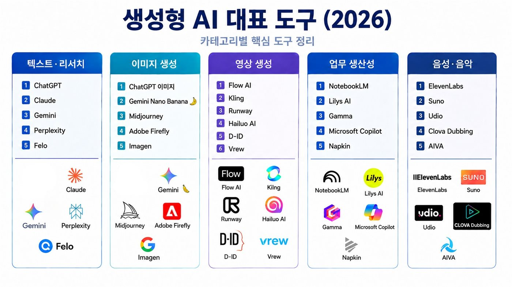

01생성형 AI, 무엇이 다른가
검색하는 도구가 아니라, 업무 결과물을 함께 만드는 도구
검색 — 필요한 정보를 찾아주는 역할
키워드 검색 · 링크 확인 · 원문 조회
생성 · 업무 협업 — 내용을 새롭게 만들어주는 역할
맥락에 맞춰 결과물을 함께 완성
공지문 초안 · 상품 설명문 · 홍보 아이디어 · 판매자료 분석 · 이사회 보고서 · 정산 안내 작성
02생성형 AI 도구 종류 (2026)
카테고리별 핵심 도구 — 오늘은 ChatGPT를 중심으로, 미니 앱은 Gemini canvas, 영상은 Google Flow를 씁니다.

| 카테고리 | 대표 도구 |
|---|---|
| 텍스트 · 리서치 | ChatGPT · Claude · Gemini · Perplexity · Felo |
| 이미지 생성 | ChatGPT 이미지 · Gemini Nano Banana · Midjourney · Adobe Firefly · Imagen |
| 영상 생성 | Flow AI · Kling · Runway · Hailuo AI · D-ID · Vrew |
| 업무 생산성 | NotebookLM · Lilys AI · Gamma · Microsoft Copilot · Napkin |
| 음성 · 음악 | ElevenLabs · Suno · Udio · Clova Dubbing · AIVA |
03로컬푸드 조합 업무와 AI
조합의 6대 업무 모두에 AI를 붙일 수 있습니다.
1
출하·입고출하표·명세서 정리2
판매분석매장·품목별 매출3
정산·보고농가 정산·이사회4
회의·총회회의록·총회자료5
소통고객응대·농가공지6
홍보SNS·상품설명·영상AI의 역할
정리 · 요약 · 분석 · 초안 · 재구성
사람의 역할
판단 · 확인 · 승인 · 책임
04AI가 잘하는 일, 사람이 해야 하는 일
AI에게 작성은 맡기고, 사람은 판단과 검증, 최종 의사결정을 한다.
| AI에게 맡기기 좋은 일 | 사람이 반드시 해야 하는 일 |
|---|---|
| 긴 자료 요약 | 정산 금액 최종 확인 |
| 공지·안내문 초안 | 원산지·표시사항 확인 |
| 판매 데이터 정리·분석 | 고객 상황에 대한 판단 |
| 상품 설명·홍보 문구 | 개인정보·보안 관리 |
| FAQ·응대 문안 작성 | 규정·지원사업 요건 확인 |
| 아이디어 확장 | 최종 의사결정 |
05조합 실무에서 바로 쓰는 AI 활용 사례
오늘 6개 미션에서 이 사례들을 직접 만들어 봅니다.
1
판매현황매장별 매출 요약 · 부진 품목 이슈 도출2
이사회 보고핵심 5줄 요약 · 보고문 톤 정리3
농가 정산농가별 정산 안내 · 출하 일정 공지4
상품 설명온라인몰 상세 문구 · 꾸러미 구성 안내5
고객 응대문의·클레임 답변 · 응대 FAQ 정리6
홍보SNS 문구·포스터 · 숏폼 영상 기획